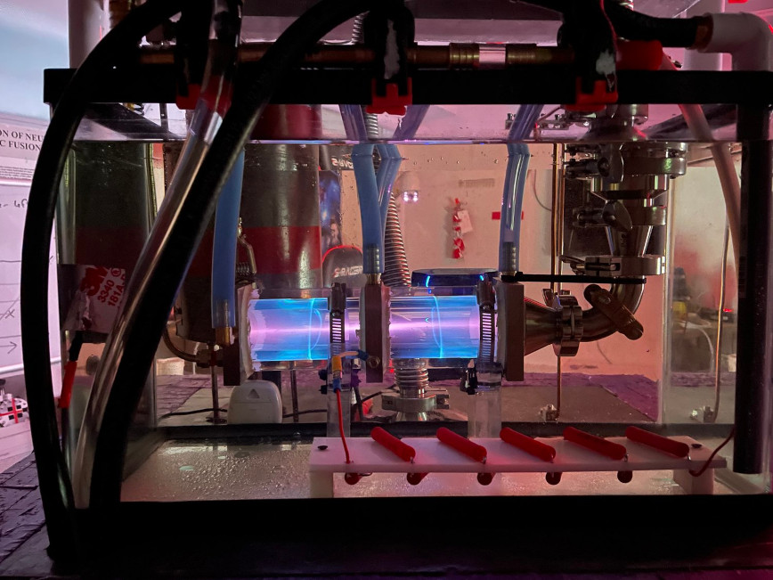
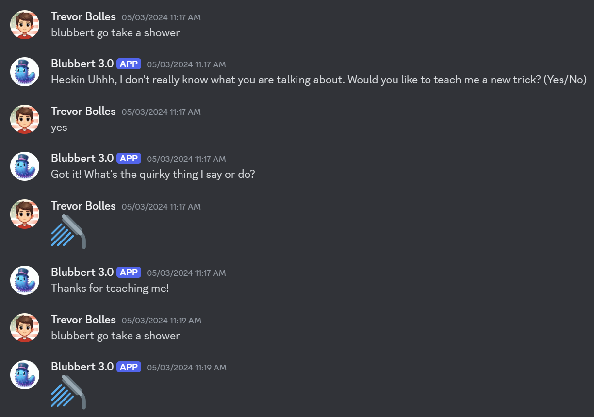
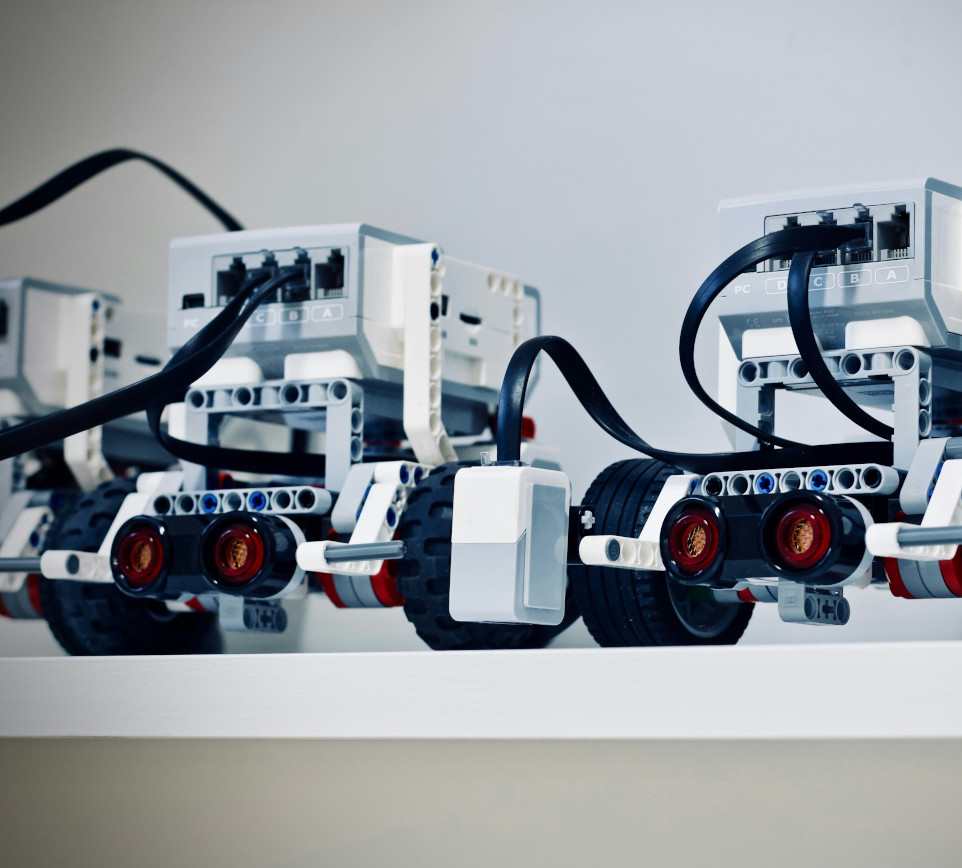

Projects
White Paper on Machine Learning
I have written a comprehensive white paper on machine learning, exploring its applications in various domains. The paper discusses different algorithms, techniques, and real-world use cases. It showcases my research and analytical skills in the field of artificial intelligence.

Discord App Development
I have developed several Discord bots and applications that enhance the user experience and provide useful functionalities. These projects involve integrating APIs, handling user interactions, and creating intuitive interfaces. They demonstrate my proficiency in web development and my ability to create engaging and interactive applications. my first project that has undergone 2 different versions was blubbert, blubbert is a bot that is meant to be simple in use that allows users to interact with and have him say funny things to certain triggers. The second edition of blubbert allowed him to learn new things to say to users.
Robotics Projects
I have been actively involved in robotics, participating in competitions and camps. These experiences have allowed me to apply my programming skills to control robots, solve complex challenges, and collaborate with team members. I have gained hands-on experience in hardware integration, sensor programming, and autonomous navigation. my primary experience in the robotics field was when I was growing up participating in the junior FLL leagues that used Lego Mindstorms to preform different tasks. The projects that I worked on involved a pathfinding robot and a sumo wrestling robot.
